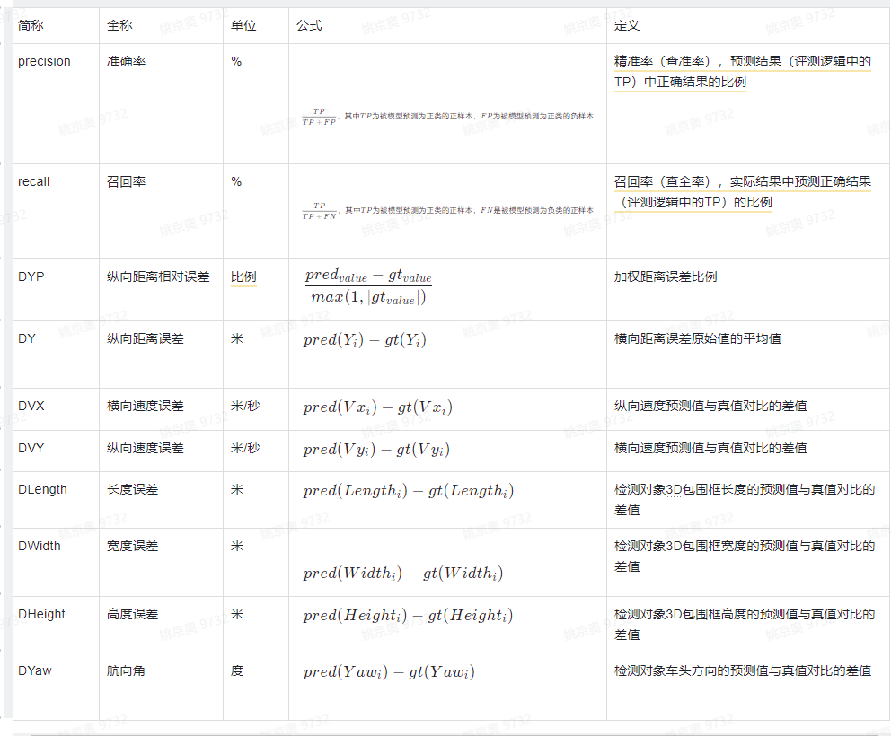

1.3 通用评测指标
通用评测指标的统计项(样本统计量)和场景分类都是相同的，所以下面把场景、指标项(误差变量)和统计项(样本统计量)分成独立的列表。
1.3.1 指标项（误差变量）
坐标系定义：采用VCS（Vehicle Coordinate System）坐标系，以自车后轴中心在地面上的投影点为原点的车辆坐标系，X代表横向（行车方向右侧垂直方向），Y代表（行车方向），示例图见下图1：
图1 VCS坐标系定义示例
距离的定义：通过轨迹关联，找到与任务检测到目标id对应的真值目标id，距离的计算是按照目标中心点据原点的距离来计算，距离的计算忽略pitch角的影响，通过tracking结果进行轨迹匹配，将每帧关联上的目标进行误差计算，距离的计算见图2：

其中pred__value指预测值，gt__value指真值。
图2 距离以及误差计算示意图
1.3.2 统计项(样本统计量)
说明：C表示统计数据的集合，value(C,x)表示C中第x个数的值，sort(C)表示对C进行从小到大排序，floor(x)表示不大于x的整数，count(C)表示统计集合C中数据的总量，pred代表预测值，gt代表真值
表2 统计指标介绍汇总表

1.3.3 评测场景
一维场景：目前定义了4类（白天*高速、白天*城区、夜晚*高速、夜晚*城区） 距离场景：10米分段距离